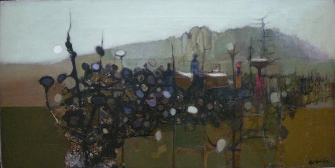

Clifford Frith
1924 –
Artist Biography
Clifford Frith was born in London and studied at Camberwell School of Arts and Crafts, where he later taught, and at St Martin’s School of Art. His teachers included Victor Pasmore and Roland Vivian Pitchforth. Frith also taught at Goldsmith’s College and Croydon College where pupils included Bridget Riley and Allen Jones. He exhibited at the Royal Academy, Wildenstein and Redfern Galleries and elsewhere. Perhaps Frith’s main contribution, however, came in Nigeria where he was head of the art school at the Ahmadhu Bello University, Zaria from 1959-1962. This was a key institution during an important period in the growth of modern art in newly independent Nigeria. Frith’s modernist London School-style figurative painting was a major influence on young Nigerian artists such as Uche Okeke. From 1972 Frith made his home in Australia, continuing teaching and painting throughout a long life. His work is held in the National Gallery of Australia, in Parliament House in Canberra and many other Australian public institutions as well as in the Victoria & Albert Museum in London and Victoria Art Museum in Bath. Frith was namechecked in Nigerian Modernism at the Tate Modern in London 2025-26 as being an influential teacher of the Zaria school.

Harmattan landscape with Figures